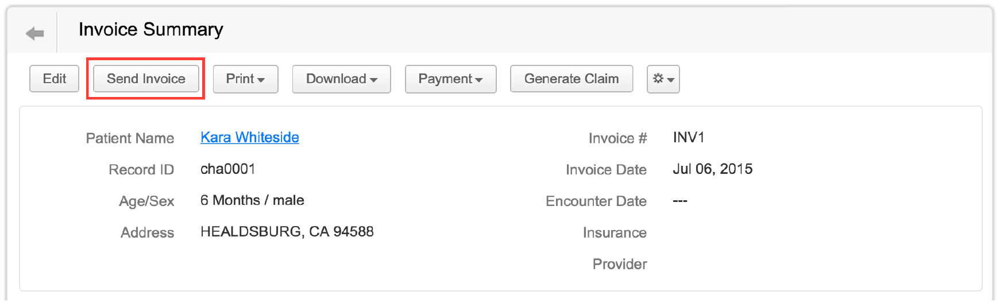
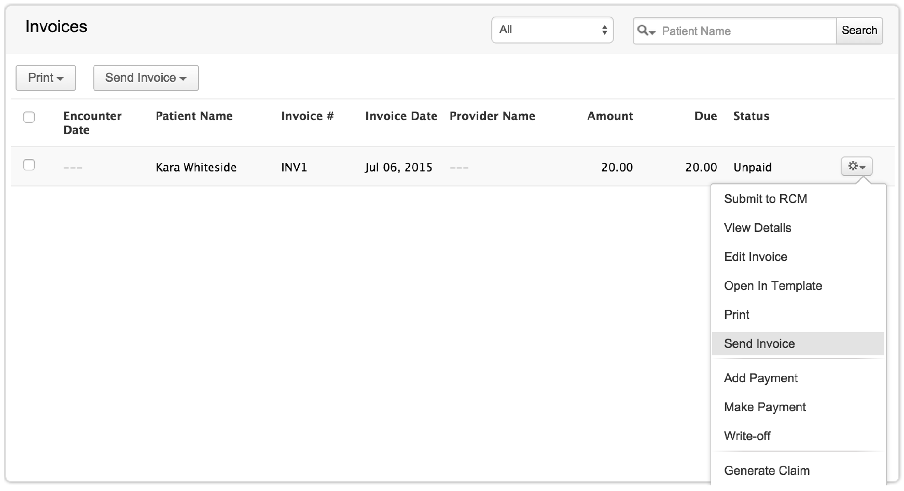
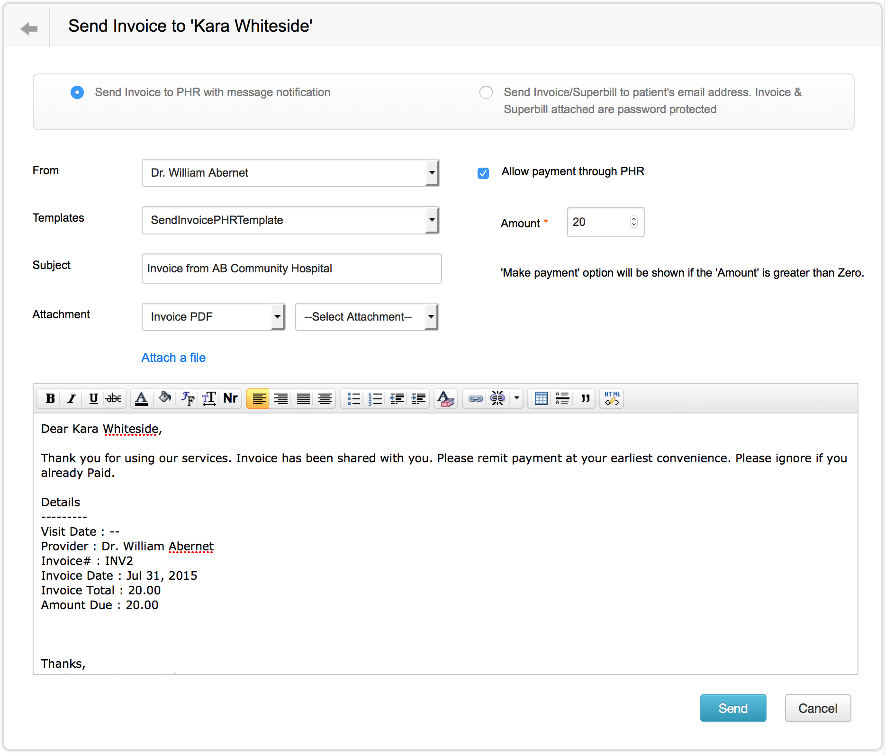
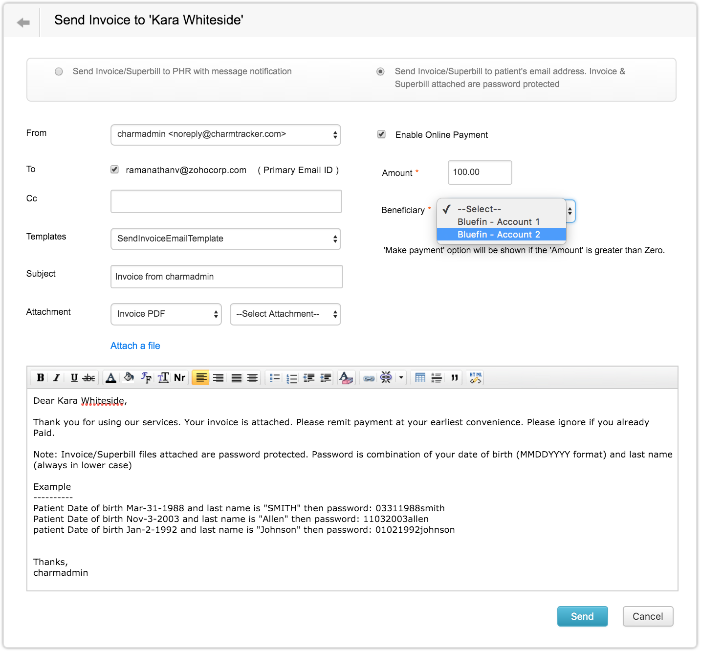
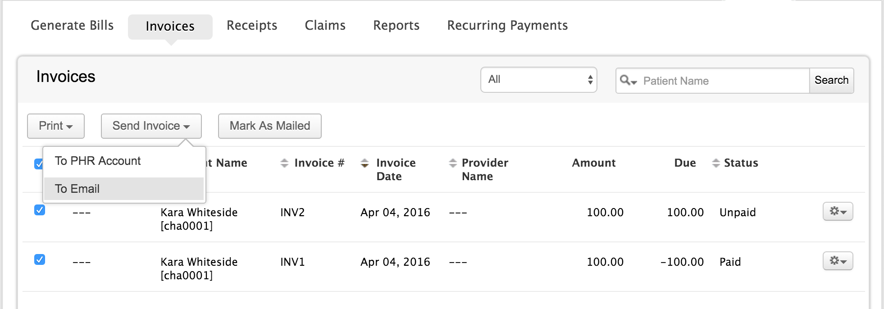
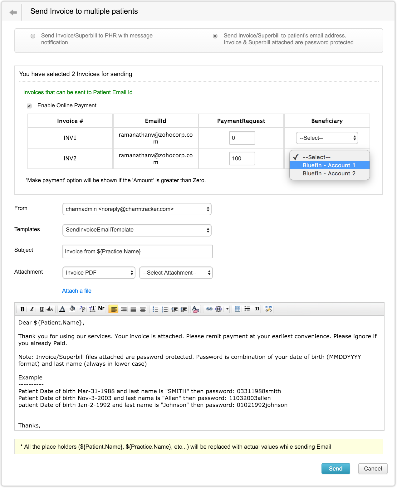
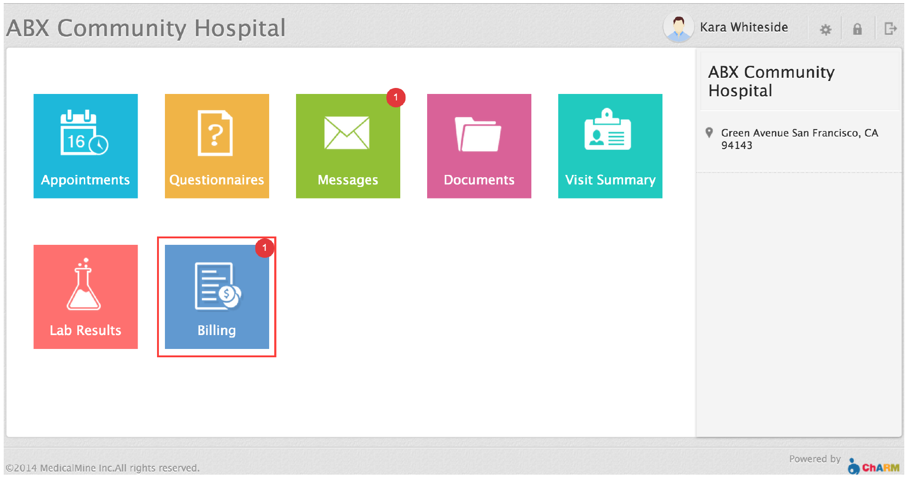
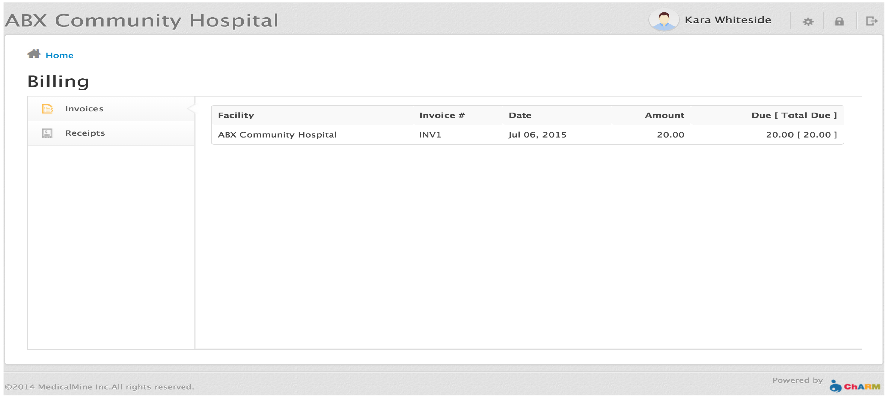
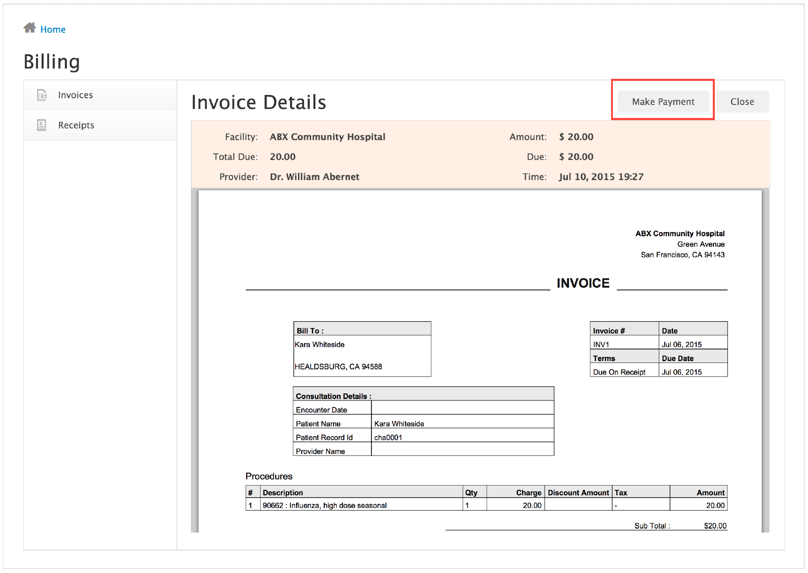
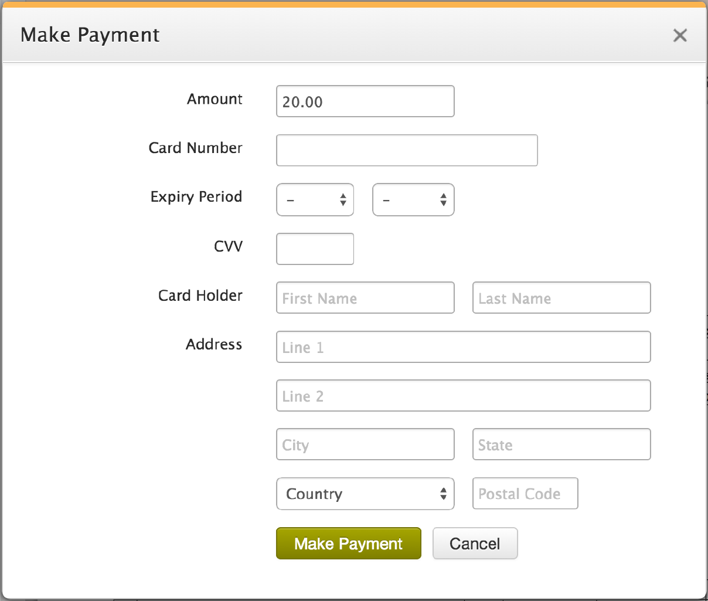

Online Patient Payment
ChARM EHR now allows you to share invoices and receipts to Patient Portal there by simplifying the process of collecting payments from Patient or Care Giver. Instead of downloading the attachment, Patient or Care Giver can see invoices and receipts from Patient Portal. In addition, if you are using our Bluefin Payment Gateway Integration, Patient or Care Giver can pay outstanding invoices from the Patient Portal making collections seamless and efficient. This document will walk you through the steps for sharing invoices to Patient Portal and making payment for outstanding invoices from Patient Portal.
Note : If your practice has not subscribed for Bluefin Payment Gateway integration and you wish do so now, please contact us at support@charmehr.com to get your gateway merchant account.
Supported functionalities include
Send Invoice
Using 'Send invoice' functionality, provider can share an invoice to patient for the services rendered. Steps for sending the invoice to Patient Portal.
- Go to 'Billing' > 'Invoices' and click on the invoice to be sent to patient, then click 'Send Invoice'
(or)
- From the 'Billing' > 'Invoices' List View, Click on the 'Send Invoice' option available under action drop down menu (see below).  
- In the 'Send Invoice' view, you have two options to choose from
- Send Invoice to Patient PHR account with message notification
- Send Invoice to Patient email address with Invoice / Superbill attached and password protected
Send Invoice to Patient PHR Account
- If the patient has PHR account, Option i) is selected by default.
- Select 'Allow payment through PHR'. Enter the amount to be paid in the 'Amount' field. By default it will show the invoice due.
- Enter the 'Subject' and choose the invoice format to send. Edit the message content, if needed. Click 'Send'. Invoice will be shared with Patient Portal. 
Send Invoice to Patient Email Address
- Choose Option 2 for sending invoice by email
- Select 'Enable Online Payment' check box. Enter the amount to be paid in the 'Amount' field. By default it will show the total invoice due. Choose 'Beneficiary' account (Bluefin merchant account) to which amount to be transferred.
- Enter 'Subject' and choose the attachment to be sent.
- Edit the message content, if needed. We have provided ${Payment URL} placeholder which can be embedded into the email content. This placeholder will be replaced by an URL link in the email sent to the patient. Patient can click on the link to make the payment.
- You can edit the "Send Invoice - Email" template from "Settings > Templates" section to include the ${Payment URL} placeholder
- Click 'Send'. Invoice will be sent as an email to the patient's email address. 
Send Invoices in Bulk
- Go to 'Billing' > 'Invoices'. Select all the invoices to be sent. Choose 'Send Invoice' > 'To Email'.
- Select 'Enable Online Payment'. Enter the amount to be paid in the 'PaymentRequest' column for each invoice. By default it will show the invoice due. Choose 'Beneficiary' account to which amount to be transferred.
- Enter 'Subject' and choose the attachment to send along with the mail. Edit the message content, if needed. Click 'Send'. Invoices will be sent to the Email given.
Note : Please edit your 'Send Invoice' message template to include the steps for making payment from Patient Portal. In PHR, option to make payment will be shown only for the invoices with due.
Make Payment
Make Payment From PHR
When the invoice is shared to Patient Portal, it will be listed in 'Billing' > 'Invoices' section. Please follow the steps given below for paying the bills.
- Log in to ChARM PHR. Click on 'Billing' section. 
- In Billing section you have two tabs
- Invoices - Shared invoices will be listed here.
- Receipts - Receipts for payment made from Patient Portal will be listed here.
- Click on the invoice to be paid. Invoice details view will be shown. 
- For invoices with due 'Make Payment' option will be available on the top. 
- Click on 'Make Payment' to proceed to the payment view. Enter your card details on the form.
- Click 'Make Payment'. Now the page will be redirected. 
Make Payment From Email
- Patient will receive the invoice in their email. Payment link will be available in the email content for patients to pay online. ( If the invoice due is zero then the payment url will not be available). Click on the link available in the email.
- Make Payment form will be shown. Enter your credit card details. All the fields are mandatory.
- Click 'Make Payment' button. Request will be made to payment gateway for processing. Upon successful transaction, receipt will be shown. A copy of the receipt will be sent to the patient by Email.
Note : Your credit card details are not stored in ChARM, but just a reference provided by the Bluefin Payment Gateway.
Please do not close or refresh the page. On successful transaction, your card will be charged with the due amount. Receipt for the payment will be shown and the invoice will be updated automatically.
In case of any issues, please get back to your practice staff.